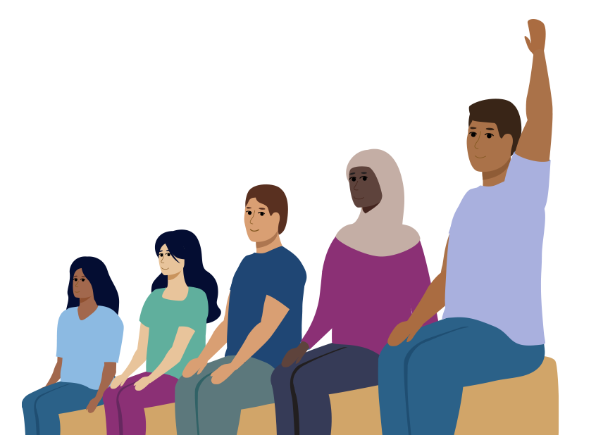

Learn About Organ Donation...
How Does It Works?

Who Can Donate?
Anyone can become an organ donor, regardless of age or ethnicity. Medical suitability is determined at the time of donation.
- Living donors: Donate a kidney or part of their liver.
- Deceased donors: Donate viable organs after passing away.
- People of all ages can be donors. The suitability of organs depends on medical assessment, not age.